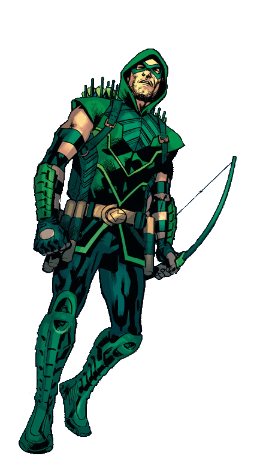

The Green Arrow
Oliver Jonas Queen is a wealthy businessman, owner of Queen Industries, and a well-known celebrity in Star City. After accidentally falling off of his cruise ship he had been stranded on Starfish Island. He learned to survive by any means necessary. He developed primitive Trick Arrows as advanced methods of hunting and foraging for food. He helped a small boat crew fight off Pirates with the skills he learned. Now calling himself Green Arrow, he realized that he could use his abilities to serve society for the greater good and fight crime.